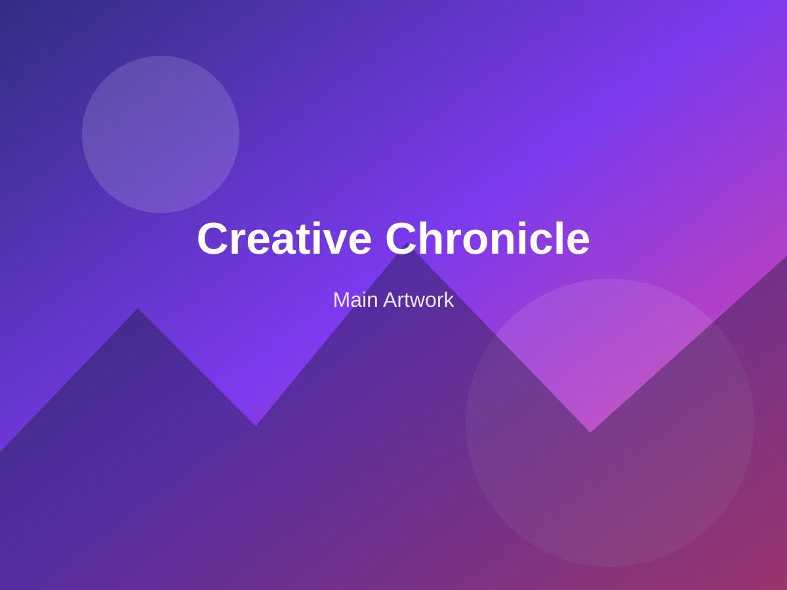
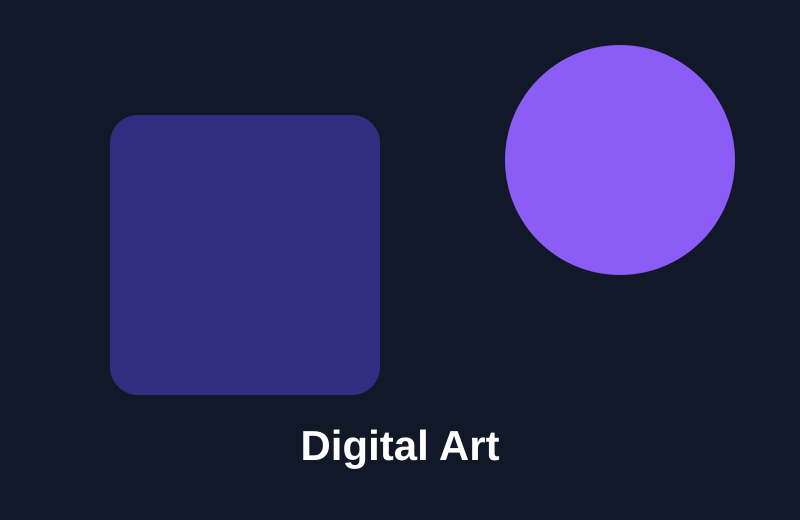
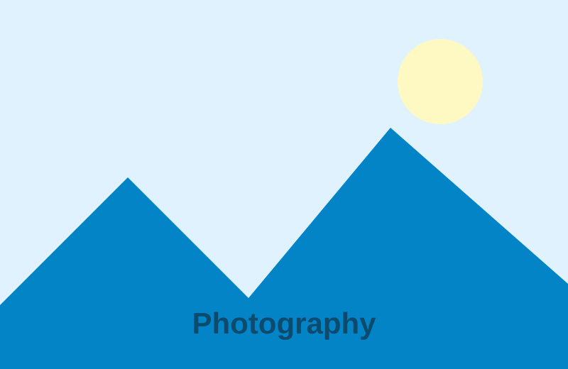
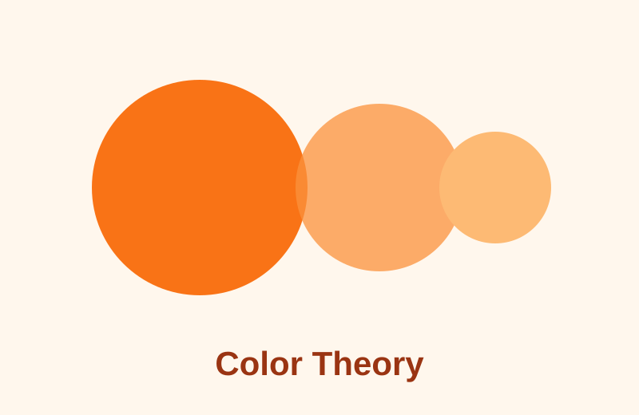
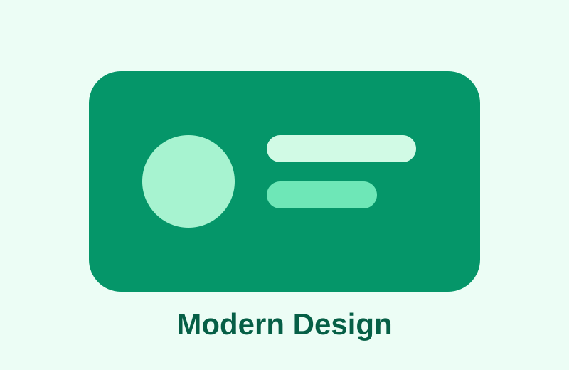

Exploring how contemporary creators combine
traditional visual language with modern digital tools.
JD
Jane Doe
Published on Oct 25, 2026 · 8 min read
Creative work increasingly moves between physical
and digital spaces. Artists sketch on paper, refine
ideas on tablets, photograph textures and combine
them into visual experiences that are difficult to
classify using traditional categories.
A modern editorial layout therefore needs to support
content that changes naturally with the viewport.
The page should not depend on fixed positions or
artificial heights simply to preserve its shape.
CSS Grid / 2D Layout
Mosaic Gallery

Experimental digital landscape
Urban Blue
Golden Story
Layout should follow the content
In the previous implementation, the gallery depended
on fixed coordinates. The images were removed from
the normal document flow, so the surrounding article
could not naturally respond to their real height.
CSS Grid solves the problem by keeping every image in
normal flow while still allowing the main artwork to
occupy more visual space. The layout remains readable
even when the viewport changes.
Bootstrap Grid
Recommended Articles

Digital
The New Language of Digital Art
How creators use software as a visual
medium rather than just a production tool.

Photography
Framing Everyday Landscapes
Simple composition techniques that
transform familiar spaces into stories.

Color
Why Color Changes the Story
Understanding how palettes influence
emotion, rhythm and visual hierarchy.

Design
Designing With Less
A practical look at clarity, whitespace
and reduced visual noise.